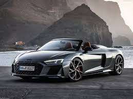

The Audi R8 is a striking mid-engine sports car from the renowned German automaker Audi, blending exotic supercar performance with everyday usability and dynamic quattro all-wheel-drive traction. First introduced in 2006 and produced until 2024 by Audi Sport GmbH, the R8 became a benchmark in its segment thanks to its lightweight Audi Space Frame construction, naturally aspirated V10 engines, and racing-inspired engineering that share roots with Lamborghini’s Huracán platform.Powered by high-revving V10 engines in its later generations, the R8 delivers breathtaking acceleration – capable of sprinting from 0 to 100 km/h in around 3.1–3.7 seconds and achieving top speeds well over 320 km/h – all while maintaining exceptional handling and stability. Its aggressive yet elegant design features mid-engine proportions, sharp aerodynamic bodylines, bold Singleframe grille, and precision-tuned suspension that balance performance and everyday ride comfort. Inside, the cockpit captivates with premium materials, advanced Audi Virtual Cockpit digital displays, Bang & Olufsen sound systems, and driver-focused ergonomics that underline both luxury and sportiness.Revered by enthusiasts and celebrated for its technical prowess and thrilling driving experience, the Audi R8 remains an icon of modern automotive engineering and performance.